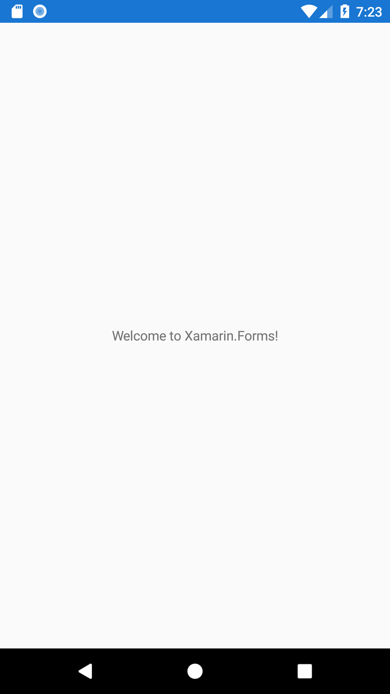
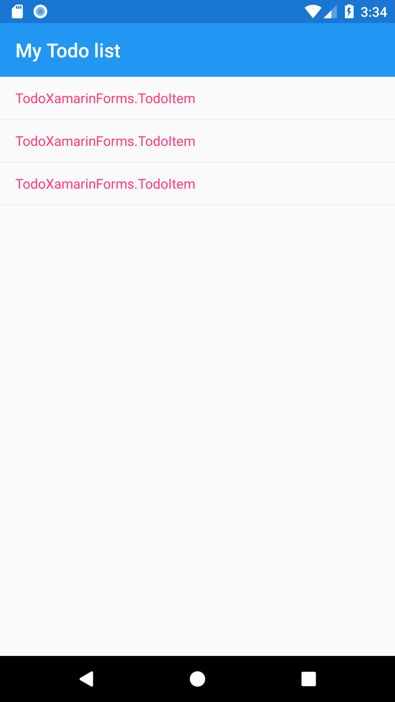

Today we're going to look at creating our TODO application using Xamarin Forms. Xamarin Forms is a cross platform framework build on the .NET stack
that allows for massive code re-use across platforms. It allows us to share both the application logic and the UI code between multiple target
platforms (mostly). There are some exceptions for truly native behavior, of course, like Notifications (which we won't get into today) and platform-specific
elements like the Android Floating Action Button (we'll talk more about that later in this post). For now let's just get started and see what we get out of
the box.
Note: All of my steps are using Visual Studio 2017 Community on Windows. Your mileage may vary if you work on a different edition of VS or on Visual Studio for Mac.
Tools and Environment
We can develop for Xamarin Forms on either a PC or a Mac. On PC we would use Visual Studio (I'm using Visual Studio 2017 Community)
and on Mac we would use Visual Studio for Mac. For Android development, the installers for Visual Studio will install
all additional dependencies, like the Android SDK, emulators, Java, etc. iOS setup can be a little trickier: no matter which OS you develop on, you'll
need a Mac with XCode installed. If you're developing on a Windows machine, Visual Studio will connect to the Mac for iOS compilation. This is needed
because Apple requires a Mac to compile iOS applications.
In addition to Visual Studio, I would also recommend installing Android Studio. This isn't required, especially for quick prototyping, but it has
better tools for creating/managing emulators and for managing the SDK.
With all this installed, we can now start building our app!
Hello World
The first thing we'll do is create a new app project and see what Xamarin Forms gives us out-of-the-box. We open Visual Studio and select File->New Project.
This opens a dialog where we'll select Installed->Visual C#->Cross-Platform->Mobile App (Xamarin.Forms) and name our solution "TodoXamarinForms".
Next we're asked what platforms we want to target and what type of shared project we want. We'll deselect Windows so we only create Android and iOS
projects, and we'll select .NET Standard.
Visual Studio will create our solution with 3 projects: a .NET Standard library (TodoXamarinForms), an Android project (TodoXamarinForms.Android),
and an iOS project (TodoXamarinForms.iOS).
Most of our work will be done in the .NET Standard library, with only minor ventures into the other projects for platform-specific work. Now let's run
our app and see what we have! Make sure either the iOS or Android project is set as your startup project (it should be listed in bold) and
either hit the green 'play' button or the F5 key. This will launch your emulator (simulator if iOS) and deploy the app.

Out of the box we have a Hello World app running on both Android and iOS. It's not very exciting yet, but this is where the real fun begins.
Displaying a list of TODO items
Xamarin Forms uses XAML for UI developent, which provides access to two way databinding. Unfortunately, there is a little boilerplate code required
to get this working. We're going to use the Fody package and a base class to clean that up a little.
First we'll install the Fody package. Right click on the solution and select 'Manage NuGet Packages for Solution'. Search for PropertyChanged.Fody
and install it on the .NET Standard project (reminder: the one that says neither Android nor iOS). Next we need to create a configuration XML file.
Right click on the TodoXamarinForms project and select 'Add->New Item'. Select XML from the list and name it FodyWeavers.xml. Paste this content
into the file:
Finally we want to create a base class we'll use to make our other classes observable. Right click on TodoXamarinForms again and select Add->Class.
Name the class BaseFodyObservable.cs. In the class, implement INotifyPropertyChanged.
using System.ComponentModel;
namespace TodoXamarinForms
{
class BaseFodyObservable : INotifyPropertyChanged
{
#pragma warning disable CS0067
public event PropertyChangedEventHandler PropertyChanged;
#pragma warning restore
}
}
You may notice a couple weird looking #pragma statements in the sample code. These aren't strictly needed, but they tell the compiler to ignore
the fact that nothing directly uses the PropertyChanged event. This has no effect on the functionality of our app, but I prefer to hide this warning
since we know it will be used by the Fody package.
Now that we have the boilerplate out of the way, we should is define our TODO item. Since this is a simple app, we only have 3 properties we care
about for a todo: a unique id, a title, and whether or not it has been completed. For this we'll create a new class called TodoItem.cs that is a
subclass of our BaseFodyObservable. Follow the same steps used to create the BaseFodyObservable file and add the following content:
namespace TodoXamarinForms
{
public class TodoItem : BaseFodyObservable
{
public int Id { get; set; }
public string Title { get; set; }
public bool IsCompleted { get; set; }
}
}
Now it's time to start looking at the data we want to show on our landing screen. To start with, we want to display a title at the top of the screen
and show a list of our todo items. We'll create a view model called TodoListViewModel that holds this data. Don't forget to make this a subclass of
BaseFodyObservable as well.
using System.Collections.ObjectModel;
namespace TodoXamarinForms
{
public class TodoListViewModel : BaseFodyObservable
{
public string Title => "My Todo List";
public ObservableCollection TodoList { get; set; }
}
}
The final thing we want to do for now is to create a default list of Todo items so we have something to display. We'll start by hard-coding a few
items.
...
public ObservableCollection TodoList { get; set; } = new ObservableCollection
{
new TodoItem { Id = 0, Title = "Create First Todo", IsCompleted = true},
new TodoItem { Id = 1, Title = "Run a Marathon"},
new TodoItem { Id = 2, Title = "Create TodoXamarinForms blog post"},
};
...
Now we want to create our list screen and bind it to the data we created above. We could just edit the MainPage.xaml file that was created for us,
however I don't like that name so we're going to create our own. Right click on the TodoXamarinForms project and select 'Add->New Item'. From
here select 'Xamarin.Forms->Content Page' and name it TodoListView. This creates a new XAML page with a C# code behind, but we still need to
tell it to use our View Model. Open TodoListView.xaml.cs and in the constructor set BindingContext to a new instance of TodoListViewModel.
using Xamarin.Forms;
using Xamarin.Forms.Xaml;
namespace TodoXamarinForms
{
[XamlCompilation(XamlCompilationOptions.Compile)]
public partial class TodoListView : ContentPage
{
public TodoListView ()
{
InitializeComponent ();
BindingContext = new TodoListViewModel();
}
}
}
Next we'll create our UI and bind it to the data in our View Model. For now this will just be a simple screen that displays our
list of TODO items. Open TodoList.xaml and delete everything from within the ContentPage.Content tag. Replace it with a ListView and bind the data from
our View Model. We should also set the page title and bind it to our View Model.
If we try to run the app now we'll still see the Hello World screen from the initial project creation, and we may ask "What's going on?". This is
because we have one step remaining: we need to tell our app to start on our new screen. Open App.xaml.cs and replace the MainPage line with
...
MainPage = new NavigationPage(new TodoListView());
...
This line does a couple things. The most obvious portion is that it instantiates our TodoListView and sets the MainPage of our application. We also
wrapped our View in a new instance of NavigationPage. This does a couple things for us: it handles the iOS Safe Area and sets up
the structure we'll use for navigation later in the app.
Now when we run the app, we see our new screen with a title and a list of "TodoXamarinForms.TodoItem". This isn't quite what we want, as it'd be
much more useful to show the TodoItem's Title.

To show our TodoItems's Title, we're going to use a built in control called TextCell. There are many other controls we could use if we wanted a
different layout, but for our simple app TextCell is more than sufficient. Open TodoListView.xaml and add the new TextCell to the ListView tag, binding
the Text attribute to your Title property. Since this is in the context of our ListView, this binds to the individual TodoItem's Title property.